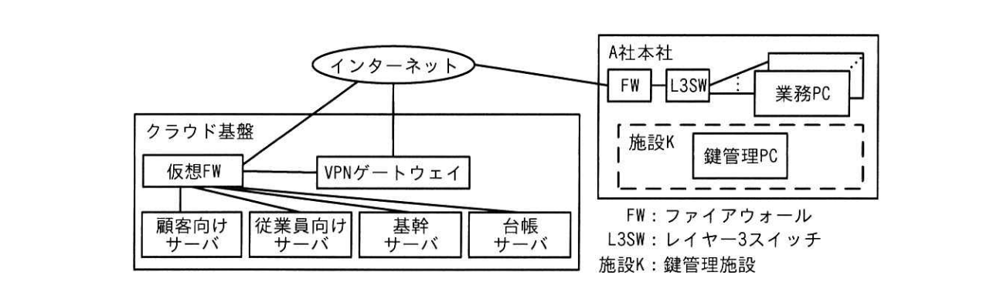

問2 暗号資産交換業におけるセキュリティ
A社は従業員 50名の暗号資産交換業者である。A社では、3年前から暗号資産Bコインを取り扱っており、20万人の顧客が暗号資産口座を開設している。A社には財務部があり、顧客の預けた時価 200億円相当のBコインを顧客に代わって保有し管理している。
[B コインの仕組み] B コインは、楕円曲線暗号を用いたデジタル署名方式を用いて、分散型台帳で管理される。Bコインの保有者が、別の者にBコインを送ることを移転という。Bコインを移転する際は、まず、Bコインの移転先，移転数量などを含むバイナリ形式で表現されたBコインの移転指示情報（以下、移転情報という）に対して、移転元の署名鍵を用いてデジタル署名し、次に、そのデジタル署名済みの移転情報をBコインの分散型台帳を保存するサーバ（以下、Bコインノードという）の一つに送付する。デジタル署名済みの移転情報は，移転元の署名鍵に対応する検証鍵を用いて検証することができる。同一の移転情報は一度しか分散型台帳に記録されず、重複してBコインが移転されることはない。Bコインノードは、誰でも自由にインターネット上に立ち上げることができる。
[A社のシステム構成］ A社のシステム構成を図1に、機器の概要を表1にそれぞれ示す。

図1 A社のシステム構成（抜粋）
| 名称 | 概要 |
|---|---|
| VPNゲートウェイ | A社本社内の業務PCからのVPN接続を終端する。 |
| 顧客向けサーバ | A社の顧客向けの機能を提供する。提供する機能には、出庫注1）依頼などがある。 |
| 従業員向けサーバ | A社の従業員向けにBコインを管理する機能を提供する。 |
| 基幹サーバ | 顧客の暗号資産口座に関する情報を集中的に管理する。 |
| 台帳サーバ | Bコインノードのうちの1台である。インターネット上の他のBコインノードとピアツーピア通信を行う。 |
| 業務PC | A社の各従業員に貸与されている。FWでは、インターネット上のWebサイトとの通信が許可されている。業務に必要なアプリケーションソフトウェア及びマルウェア対策ソフトがインストールされている。クライアント認証を用いたVPNゲートウェイへのVPN接続を利用できる。 |
| 鍵管理PC | Bコインの移転時に用いるA社開発のアプリケーションソフトウェア（以下、署名アプリという）がインストールされている。製造元から調達して以降、一度もネットワークに接続しておらず、他の機器とのデータの授受にはUSBメモリだけを用いている。 |
| 仮想FW | ステートフルパケットインスペクション型FWである。 ・インターネットからは、顧客向けサーバへの通信だけを許可する。 ・VPNゲートウェイからは、従業員向けサーバへの通信だけを許可する。 ・基幹サーバからは、顧客向けサーバ・従業員向けサーバ・台帳サーバへの通信だけを許可する。 ・台帳サーバからは、インターネットへの通信だけを許可する。 ・顧客向けサーバ及び従業員向けサーバからは、全ての通信を禁止する。 |
施設 K には鍵管理 PC と監視カメラだけが設置してあり、施設Kはネットワークから遮断されている。監視カメラの映像は、監視カメラの内蔵ストレージに保存され、定期的に内蔵ストレージから別の媒体にコピーして保管される。施設Kの出入口には金属探知機がある。A社が保有し管理するBコインの署名鍵（以下，署名鍵Sという）は鍵管理 PC に保存してあり、対応する検証鍵（以下、検証鍵Vという）は基幹サーバに保存してある。施設Kには、①サイドチャネル攻撃を防ぐ対策が施されている。
A社は施設Kについて平常時の運用ルールを図2のとおり定めている。
1.財務部の従業員だけに入室を許可する。
2．電子機器の持込み及び持出しは、会社の用意したUSBメモリ（以下、業務用メディアという）の持込み及び持出しだけを許可する。
出庫依頼は平均して1日5件あり、毎営業日に出庫依頼の処理（以下、出庫業務という）が行われる。出庫業務の処理手順を図3に示す。
手順1 午前9時、基幹サーバが、未処理の出庫依頼を顧客向けサーバから取り出す。そして、移転情報を記録したファイルを出庫依頼ごとに一つずつ生成し，従業員向けサーバに全てアップロードする。
手順2 午前 10時、当日の出庫業務の担当者（以下、当日担当者という）が、次の作業を行う。
（i）自身の業務 PCを用いて、手順1で生成された各ファイルを従業員向けサーバから全てダウンロードし、所定の場所から取り出した空の業務用メディアに全て保存する。手順1で生成されたファイルが一つもない場合は、出庫業務を終了する。
（ii）業務PCから業務用メディアを取り外し、業務用メディアを持って施設に入室する。
（iii）鍵管理PCの電源を入れ、業務用メディアを接続し、署名アプリを起動する。
業務用メディア内の移転情報を記録した各ファイルを署名アプリに読み込み、移転情報に対して署名鍵Sを用いてデジタル署名する。デジタル署名済みの移転情報を記録した各ファイルを業務用メディアに保存する。
（v）鍵管理 PC から業務用メディアを取り外し，鍵管理PCの電源を切る。
業務用メディアを持って施設Kから退室し、自身の業務 PCに業務用メディアを接続する。
（vi）（vii）自身の業務 PCを用いて、業務用メディア内のデジタル署名済みの移転情報を記録した各ファイルを，従業員向けサーバに全てアップロードする。
（vii）業務用メディア内のデータを全て消去し、所定の場所に返却する。
手順3午後1時、基幹サーバが、手順2（vii）でアップロードされた各ファイルを従業員向けサーバから全てダウンロードして、各ファイルに記録された移転情報と手順1で生成したファイルに記録された移転情報が一致するかどうかを検査する。また、各移転情報に付与されたデジタル署名を検証鍵Vで検証する。異常がない場合、全てのデジタル署名済みの移転情報を台帳サーバに送付する。移転情報が一致しなかった場合又はデジタル署名の検証に失敗した場合，処理を中止し、財務部の従業員全員に電子メールで警告する。
注記 財務部には複数の従業員がおり、営業日ごとの出庫業務の担当者を事前に割り当てている。
[B コインの不正移転への対策強化] A社の経営陣は、保有し管理するBコインの不正移転のうち、第三者の攻撃によるもの及び従業員一人の不正によるものの防止策を強化したいと考えた。そこで、セキュリティ部に所属する情報処理安全確保支援土（登録セキスペ）のJさんに、そういった不正移転の想定事例をまとめるよう指示した。Jさんは図4のとおり想定事例をまとめた。
想定事例（a） 第三者の攻撃
当日担当者が標的型攻撃メールを受し、マルウェアを含む添付ファイル（以下、添付ファイルに含まれていたマルウェアをマルウェアメという）を業務PCで開いてしまい，業務PCがマルウェア★に感染する。マルウェア✕は、マルウェア対策ソフトに検知されず、攻撃者の指示に従って、PC 上の任意のファイルの書換えやインターネット通を行うことが可能であるとする。
図3の手順2（iv）では、デジタル署名しようとする移転情報の内容を当日担当者が確認していない。そこで攻撃者が、②図3の手順2（i）と（ii）の間及び（vi）と（vii）の間のそれぞれにおいとマルウェアメに特定の処理をさせる。その結果、図3の手順3で警告の電子メールが送られないまま、Bコインが攻撃者に移転される。
想定事例（b）従業員一人の不正
当日担当者が、図3の手順2（iv）の作業中に署名鍵Sを業務用メディアにコピーする。当日担当者は、図3の手順2（vi）の後、業務 PCで業務用メディアから署名鍵Sを取り出し、自身の個人メールアドレスに送付する。後日，自宅で、自身にA社のBコインを移転させる移転情報を作成してデジタル署名し、インターネット上に自身で設置したBコインノードにこの移転情報を送付する。その結果、Bコインが当日担当者に移転される。
A 社の経営陣は出庫業務の処理手順を見直すよう財務部に指示した。財務部は、想定事例（a）に対しては、不正な移転情報を検知できるように、図5に示すシステム及び手順の改修案を考えた。
・手順1において、基幹サーバは、移転情報を記録したファイルに対してメッセージダイジェストを計算し、移転情報を記録したファイルの名称とメッセージダイジェストとの対応のリストを記録した一つのテキストファイル（以下、照合ファイルという）を生成し、照合ファイルも従業員向けサーバにアップロードするように改修する。
・手順2（i）において、照合ファイルも従業員向けサーバからダウンロードし、業務用メディアに保存するように改修する。
・手順 2（iv）において、当日担当者は、移転情報を記録したファイル数が当日の出庫依頼の件数と一致することを確認し，不一致の場合はデジタル署名せずに出庫業務を終了する作業を追加する。
・署名アプリは、移転情報を記録したファイルに重複がなく、移転情報を記録した各ファイルのメッセージダイジェストが照合ファイルに記録されたものと一致した場合だけ移転情報にデジタル署名し、それ以外の場合には警告画面を表示するように改修する。
A社の経営陣がこの改修案をJさんにレビューさせたところ、Jさんは、この改修案では、正規の移転情報を記録したファイルの一つを不正な移転情報に書き換えた上で、メッセージダイジェストが一致するように照合ファイルを書き換えることができてしまうと指摘し、改修案において、照合ファイルにメッセージダイジェストを記録する代わりに基幹サーバ及び署名アプリに共通鍵をもたせ、その共通鍵を[a]を記録するよう提言した。
った想定事例（b）に対して財務部は、出庫業務の担当者に対する研修を強化する対策に加えて、③図3の手順2の作業中における不正行為の機会を減らす対策を講じることにした。
A社の経営陣がセキュリティ部に業務PC のログと監視カメラの映像を分析させたところ、事業開始以来、流出事案につながる不正の兆候は発見されなかった。
[M社によるA社の買収] 半年後、従業員 200名で暗号資産交換業を営むM社がA社を買収し、A社の事業はM社に統合されることになった。M社では、M社の署名鍵を「社製ハードウェアセキュリティモジュール（以下、HSMという）に格納し，HSMをHSM 管理用のサーバ（以下，HSM 管理サーバという）に USB ケーブルで接続してから操作している。HSM 管理サーバは、M社内のLANに接続されている。 事業統合に伴って、施設Kを閉鎖し，署名鍵SをM社に移管する方針になった。M社では署名鍵のネットワーク経由での送を禁止する業務規程がある。そこでM社はA社に、図6に示す署名鍵の移送及び確認方法を提案した。
作業1 鍵の移送用のUSBメモリ（以下、移送用メディアという）を用意しておく。A社の財務部の従業員と 1社の従業員が施設内で、鍵管理PCを用いて署名鍵をパスワード1）付き圧縮ファイルに圧縮し、この圧縮ファイルを空の移送用メディアに保存する。パスワードは紙に書き留める。
作業2 A社の従業員とM社の従業員が移送用メディア及びパスワードを書き留めた紙をM社まで持ち運ぶ。
作業3 A社の従業員とM社の従業員が、HSM 管理サーバに移送用メディアを接続して、紙に書き留められたパスワードを使って移送用メディア内で圧縮ファイルを展開する。その後HSM に署名鍵Sを読み込んで登録する。
作業4 A社の従業員とM社の従業員が、HSMで署名鍵Sを使って移転情報にデジタル署名を付与し、A社が保有し管理していたBコインがその移転情報を使って移転できるかどうかをテストする。
作業5A社の従業員とM社の従業員が、移送用メディアの内容を消去する。
注記1 移送作業中、M社の従業員は施設への入室を許可されるものとする。
注記2 A社の従業員とM社の従業員がそろってミスをする又は不正行為を共謀するリスクは無視できるほど低いものとする。
注”） パスワードは、オフライン解析を試みる攻撃に対して十分な強度のものを選ぶ。
A 社の経営陣から指示があり、Jさんがこの方法によって安全に署名鍵Sを移送できるかどうかを検討したところ、図6の方法には④幾つかの問題点があることが分かった。そこで、Jさんは、図7を起案した。
作業1 M社の従業員が、A社の財務部の従業員の立会いの下、HSW 管理サーバを操作してHSM内に 3,072ビットのRSA 暗号の鍵ペアとして暗号鍵（以下、暗号鍵Eという）及び復号鍵（以下、復号鍵Dという）を生成し、暗号鍵EをHSM管理サーバに接続した空の移送用メディアに保存する。
作業2 A社の従業員とM社の従業員が共同で、移送用メディアを施設Kまで持ち運ぶ。
作業3 A社の従業員とM社の従業員が、施設内の鍵管理 PC で、移送用メディアから暗号鍵Eを読み込む。そして、[b]を[c]で（あ）し、生成されたデータを移送用メディアに保存する。移送用メディアから暗号鍵Eを削除する。
作業4 A社の従業員とM社の従業員が共同で、移送用メディアをHSM 管理サーバまで持ち運ぶ。
作業5 A社の従業員とM社の従業員が、移送用メディアをHSW 管理サーバに接続する。
作業6 A社の従業員とM社の従業員が、移送用メディアから読み込んだデータをHSWにアップロードする。HSM 内でこのデータを[d]で[e]し、得られた[e]をHSMに登録する。
作業7 （図6の作業4と同じ）
作業8（図6の作業5と同じ）注記1 移送作業中，M社の従業員は施設Kへの入室を許可されるものとする。
注記2 A社の従業員とM社の従業員がそろってミスをする又は不正行為を共謀するリスクは無視できるほど低いものとする。
Jさんは当初、図7の案では、⑤図7の作業4で移送用メディアが盗難に遭ったとしても署名鍵Sは漏えいしないと考えていた。しかし、Jさんが図7の案を詳細に検討したところ、作業2及び4で移送用メディアを安全に持ち運びできたとしても、HSM 管理サーバが仮にマルウェアに感染し、その結果、攻撃者の指示によって⑥図7の作業1で移送用メディアに保存されるファイルが書き換えられ、かつ、図7の作業5で移送用メディアの内容を読み取られてしまった場合には、署名鍵Sが攻撃者に漏えいするリスクがあると分かった。 そこで」さんは、HSMの機能を利用して、移送用メディアに保存されるファイルの改ざんを検知できるように改良した手順をA社及びM社の経営陣に提案した。その結果、改良した手順を用いて施設KからHSMまで署名鍵Sを移送することが決定した。
設問1 楕円曲線暗号を用いたデジタル署名アルゴリズムを解答群の中から全て選び、記号で答えよ。 解答群 ア AES イ ECDH ウ ECDSA エ EdDSA オRSA 力 SHA-256
設問2 本文中の下線①について、攻撃にはどのような手法が考えられるか。手法を具体的に答えよ。
設問3[Bコインの不正移転への対策強化]について答えよ。 （1） 図4中の下線②について、どのような処理をさせるのか。処理の内容を答えよ。 （2） 本文中の[a]に入れる共通鍵を使った適切な暗号技術を答えよ。（3） 本文中の下線③について、対策を具体的に答えよ。
設問4[M社によるA社の買収]について答えよ。 （1） 本文中の下線④について、問題点のうちリスクの最も高いものを答えよ。 （2）図 7中の[b]～[e]入れる適切な字句を の解答群b〜eの解答群の中から、[あ]、[い]に入れる適切な字句をの[あ]、[い]の解答群中から、それぞれ選び、記号で答えよ。なお、解答は重複して選んでもよい。 b～e の解答群 ア 暗号鍵E イ 検証鍵V ウ 署名鍵S エ 復号鍵D あ、いの解答群 オ 暗号化 力 検証 キ デジタル署名 ク 復号 （3） 本文中の下線⑤について、Jさんが考えていた根拠を答えよ。 （4） 本文中の下線⑥について、攻撃者はファイルを何に書き換えるか。書換え後のファイルの内容を答えよ。
問2 暗号鍵管理とデジタル署名
設問1
解答例
ウ・エ
楕円曲線暗号（ECC）を用いたデジタル署名アルゴリズムはECDSA（Elliptic Curve DSA）とEdDSA（Edwards-curve DSA）の2つ。AESは共通鍵暗号（署名ではない）、ECDHは楕円曲線ディフィー・ヘルマン鍵共有（署名ではない）、RSAは整数の素因数分解を利用（ECCではない）、SHA-256はハッシュ関数。B コインのような分散型台帳では秘密鍵でECDSAやEdDSAによりデジタル署名し、対応する公開鍵で誰でも検証できる非対称暗号が基本。
設問2
解答例
施設Kの外から、鍵管理PCの作業音や鍵管理PCから放出される電磁波を観測し、署名鍵Sを推測する
サイドチャネル攻撃の代表的手法：①電磁波解析攻撃（TEMPEST）—CPUが暗号演算を行う際に放出する電磁波のパターンから鍵情報を推定する；②音響解析攻撃—キーボード入力音やPC動作音から暗号処理内容を推定する；③電力解析攻撃—消費電力の変動から鍵ビットを推定する（鍵管理PCがネットワーク接続しているかに関わらず施設外からの物理的観測で成立）。対策として施設Kにシールドルーム（電磁シールド）や防音設備を施している。
設問3(1)
解答例
（i）と（ii）の間：Bコインを攻撃者に移転する移転情報を記録したファイルを業務用メディア内に追加する
（vi）と（vii）の間：署名済みの移転情報を含む全ファイルのうち不正ファイルをインターネット経由で攻撃者に送付し、業務用メディアから削除する
マルウェアが業務PCに感染しているため、業務用メディアを業務PCに接続する(i)→(ii)間と(vi)→(vii)間に介入できる。(i)→(ii)間：不正移転情報ファイルをメディアに追加→署名アプリが正規ファイルと一緒に署名してしまう。(vi)→(vii)間：署名済み不正ファイルを攻撃者に転送し証拠隠滅のためメディアから削除→手順3の照合時には正規ファイルしか残らず検知されない。手順3での検証（ファイル数確認・ハッシュ照合）が突破される根拠がここにある。
設問3(2)
解答例
a＝メッセージ認証符号（MAC）
照合ファイルにMAC（Message Authentication Code）、具体的にはHMAC-SHA256等を記録する。基幹サーバと署名アプリが共通鍵を持ち、移転情報ファイルのハッシュにMACを付与する。攻撃者がファイルを改ざんしてMACを偽造しようとしても共通鍵なしには生成できない。単なるメッセージダイジェスト（ハッシュ）では改ざん後に再計算してすり替えられるため不十分—この改修案の脆弱点をJさんが指摘した理由。
設問3(3)
解答例
当日担当者を複数名とし、互いに確認しながら作業を実施するように手順を変更する
内部不正対策の「二人原則（Two-Person Rule / Dual Control）」。施設K内での鍵操作という最も機密性の高い作業を単独の従業員に委ねると、単独不正（署名鍵のコピー等）が実行しやすい。複数名の立会いにより：①USBメモリへの署名鍵コピーを互いに監視できる；②一人が不正を試みても他者が気付く；③証拠を残せる。銀行の金庫操作等でも採用されている標準的な内部統制手法。
設問4(1)
解答例
作業2において、パスワードで暗号化した署名鍵Sと、紙に書き留めたパスワードを一緒に転送している点
「封筒問題」：暗号化した秘密情報と復号鍵（パスワード）を同一ルート・同一人物が同時に運ぶと、どちらか一方ではなく両方が同時に漏えいするリスクがある。時価200億円相当の暗号資産の署名鍵が一度の輸送事故・窃盗・共謀で完全漏えいするリスクは最大。セキュリティの基本原則「秘密を分離して管理する」に反する。本来は暗号化ファイルと復号パスワードを異なる輸送者・経路・時間で送るべき（秘密分散）。